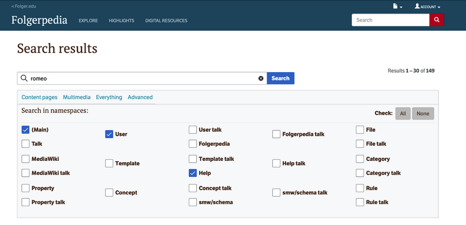

LSC555 Final Project
Megan Demarois, Agnieszka Heller & Soren Smallwood
Folgerpedia, an open-source encyclopedia that utilizes the MediaWiki platform, is part of a Folger Shakespeare Library information system. Folgerpedia is intended to foster collaboration, organize information, and provide digital resources for researchers, students, teachers, and any enthusiasts of Shakespeare’s works. Its mission is to make “collection accessible, to advance understanding and appreciation of Shakespeare’s writings and the culture of the early modern world, and to preserve and enhance our collection” (Folger Shakespeare Library, 2024).
Folgerpedia is a platform for Shakespeare-centered information that addresses content that might be too specific, unsuitable, or too archival for other channels within the Folger Institute. Its goal is to facilitate collaboration with scholars affiliated with Folger and beyond. The concept for the Folger Wiki originated when Eric Johnson and Erin Blake identified the necessity for Folger to edit Wikipedia articles related to the institution and its collection. Eventually, Eric Johnson, Erin Blake, and Owen Williams decided to organize information created by the Folger staff and Folger’s users in a Wiki format rather than competing with Wikipedia.
A significant influence on the creation of Folgerpedia was the Department of Prints and Drawings in the British Museum User's Guide, published in 1987. This guide sold in the British Museum gift shop was an example of a cultural institution’s internal resources list that was often not mentioned through official channels. For instance, it included a section on prints of costumes stored in large boxes under the title "Authorities for Artists," compiled initially only for artists' reference. Similarly, being a repository of Folger’s history and Folgres’s member’s reflections on the past is an integral part of the Folger platform.
Folgerpedia was created by Andru Vallance, whom Yaron Koren of WikiWorks hired in partnership with Folger's Online Strategy Council members. A significant portion of the initial content was transferred from the Folger's public website and Bard Classic by Rachel Stevenson, Erin Blake, Deborah J. Leslie, Sophie Byvik, Claire Dapkiewicz, and Kate Covintree. Folgerpedia was internally launched on July 9, 2014. A few weeks later, a new Folger initiative became available to collaborate and create new content on its media wiki platform and via crowd-sourcing initiatives, such as Edit-a-thons (Folgerpedia, n.d.).
The Folgerpedia collection contains books, manuscripts, art objects, bindings, Folger archives, reference images, and microfilm images. This online collection is accessible to the public to edit or encyclopedia entries, as users’ contribution is at its core principle. The articles found on Folgerpedia include “lists; how-tos; and encyclopedic entries concerning items in the collection, Shakespeare's works and characters, and his performance works” (Folgerpedia, 2024). Materials are regularly added to the collection to supplement Folger’s other online catalogs, such as Hamnet and The Finding Aid Database. The often robust information is too detailed to fit within those online databases, which is suitable for the Folgerpedia platform. “With each new article, we make a concerted effort to pull together all relevant information from Folger’s many existing resources into one place” (Folger, 2024). An example Folgerpedia contains an article about Lady Anne Kerr’s manuscript recipe book that itemizes all the recipes. This is now public scholarly research that will not need to be duplicated.
Users can access Folgerpedia by going to the Folger Shakespeare Library website and looking under the research tab or by simply going to the Folgerpedia website, which has its own domain. While The Folger Shakespeare Library website is a tad information-heavy, it is well-organized and consistent with industry standards. Finding the Folgerpedia site on the library’s page can be challenging at first, therefore, the breadcrumb trail to get back to the library website is necessary for usability and efficiency. The interface search bar is conveniently located on the top right corner of the page. The search results page, by default, requires us to select which content is intended to be viewed.
A heuristic evaluation (Nielsen, 1994) was conducted to evaluate the Folgerpedia user interface for potential improvements and deficiencies or shortcomings in usability
The biggest challenge for the users is navigating the language used on the advanced search and not having any FAQ page or helpful information to reference. Additionally, articles often needing more hyperlinks can be overwhelming for the user; for example, a page with ten hyperlinks creates a challenge in navigating back. The lack of breadcrumbs makes navigating the website too complex, considering articles contain multiple hyperlinks.
Our recommendations for enhancing the usability of Folgerpedia are as follows:
The Folgerpedia website has a plethora of helpful, specialized information that is intended to be outside the main website at Folger Shakespeare Library. There is a need for Folgerpedia and its content to expand further on already existing Shakespeare documents. Its collaborative features make it a unique information system unlike any other in the Shakespeare field. A demonstration video or a helpful tools section on the Folgerpedia site to assist new users unfamiliar with MediaWiki tools would considerably benefit the platform’s usability and its efficiency.
Folgerpedia is an exciting, innovative, and relatively easy-to-use platform that enables collaboration between Shakespeare enthusiasts and the generation of new information. Users find Folgerpedia to be a helpful tool for research, study, or teaching because of its reliable information. There is a need for its usability and efficiency correction and improvements, as the system can be unnecessarily confusing to its users as it uses technical jargon, a needless number of hyperlinks, and repetitive results. Folgerpedia would benefit from a system usability test by college students or researchers using the interface. The system uses Wiki software; therefore, an extensive revision might not be possible. Nevertheless, contact us, FAQ page, better accessibility tools, and a demonstrational video would make this interface more user-friendly.
Folgerpedia. (2014, 9 July). DC: Folger Shakespeare Library. Folgerpedia. http://www.folgerpedia.folger.edu
Folgerpedia. (n.d.) Folgerpedia. Retrieved December 5, 2024, from http://folgerpedia.folger.edu/Folgerpedia
Nielsen, J. (1994). Enhancing the explanatory power of usability heuristics. Proc. ACM CHI'94 Conf. (Boston, MA, April 24-28), 152-158. https://www.nngroup.com/articles/ten-usability-heuristics/